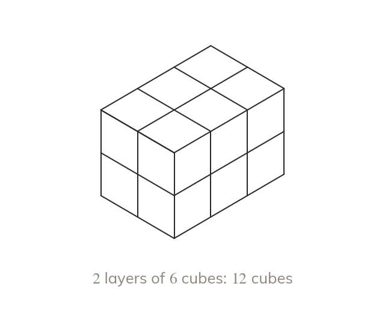

Counting cubes
Volume is the space a solid occupies, in cubic units such as cm³
A by by cuboid is layers of cubes: cm³
Volume is the space a solid occupies, measured in cubic units such as cm³
A cuboid cm by cm by cm is layers of cubes, so cm³
A cuboid cm by cm by cm is layers of cubes, so cm³